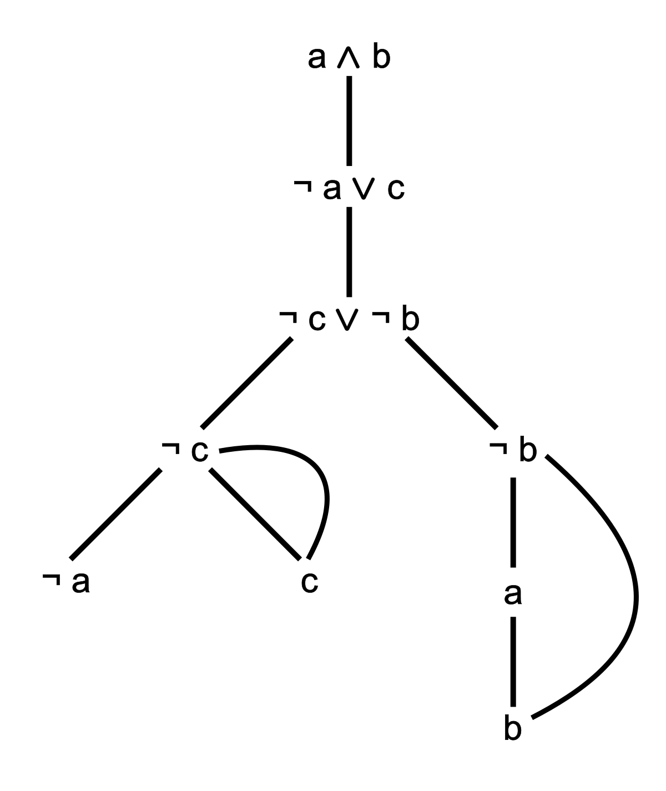

Analytic Tableau
01/2021
For my logic module, I was tasked to implement the analytic tableau algorithm to verify the validity of propositional logic theorems in C. The tableau algorithm implemented is outlined below:
- Place the negated version of the theorem at the root of our tree. At each step, we will expand the node of the tree before and add new nodes.
- Find the highest level connective. If it is a conjunction (A and B), add a new node below that contains the first part of the conjunction (A) and then a new node below that one that contains the second part of the conjunction (B). If it is a disjunction (A or B), then we split the tree and create two nodes on the same level. Add an edge to from the tree to each of the nodes. The first node contains A while the second node contains B. The disjunction creates a new branch while conjunction simply adds new nodes to the same branch. Double negations can be expanded to put the non negated version, e.g., not not A expands to A. A negated conjunction counts as a disjunction where the right and left hand sides are negated. Similarly, a negated disjunction is a conjunction with negated left and right hand sides.
- Repeat this process until all nodes have been expanded. In other words, they are simply a variable or negation, e.g., A, not A.
- For each branch, go through it. Whenever you see a contradiction, for example, A and then not A lower down the branch, you mark it as closed. It is closed because there is no way to make a contradiction true.
- Check if there are any open branches. If there aren't then the negated theorem is unsatisfiable and, therefore, the theorem is valid.

Image 1: Expanded tableau tree. Lines shown a closed branch.
The hardest part of this algorithm was implementing it in C. I built a tree structure that is composed of nodes that have pointers to the next node in the tree. Next, I had to implement tree traversal that would check each branch. By incoporating a recursive tree traversal algorithm that used a stack, I was able to check for open branches.